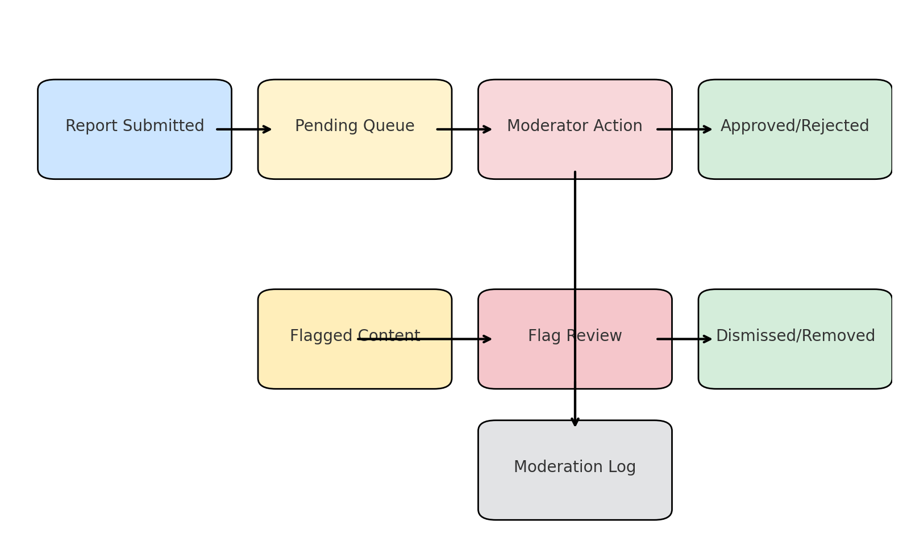

🛡️ Moderation Workflow
The moderation system ensures that submitted reports and user interactions remain accurate, safe, and appropriate.
Workflow Diagram

Stages
1. Report Submitted
A user submits an accident or near miss report. It enters the Pending Queue if approval is required.
2. Pending Queue
If the system is configured to require moderation before publishing, new reports remain here until reviewed.
3. Moderator Action
A moderator reviews the report and can:
- Approve → Publishes the report to the map.
- Reject → Report is hidden and logged with notes.
4. Approved / Rejected
The final status is stored and visible in analytics.
5. Flagged Content
Users may flag reports or comments as inappropriate. These go into a Flag Review Queue.
6. Flag Review
Moderators review flagged content and can:
- Dismiss → No action taken, flag closed.
- Remove → Report or comment is removed.
7. Dismissed / Removed
The outcome is logged in the moderation log.
8. Moderation Log
Every action (approve, reject, ban, dismiss, remove) is recorded here:
- Immutable
- Includes moderator notes
- Searchable and filterable in dashboard
Key Principles
- Transparency: All actions are logged.
- Accountability: Notes explain moderator decisions.
- Flexibility: Admins can configure whether reports require pre-approval.